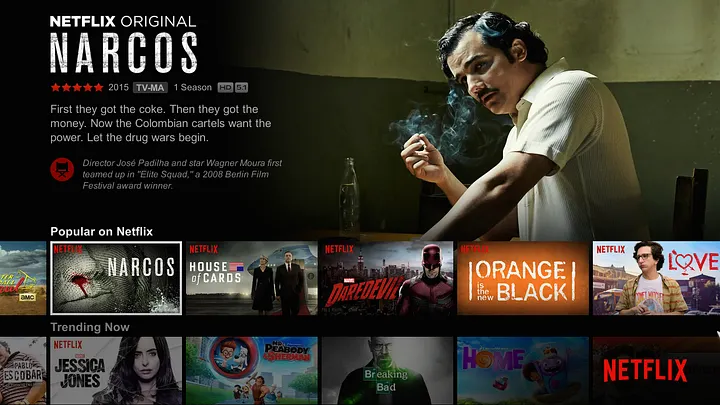
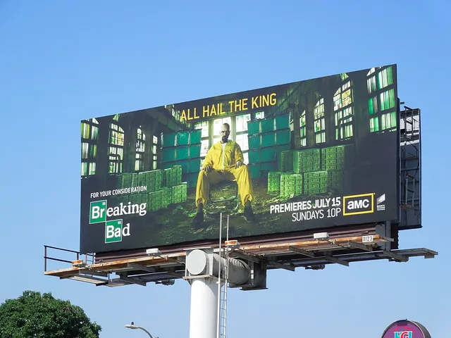
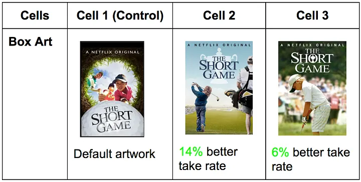
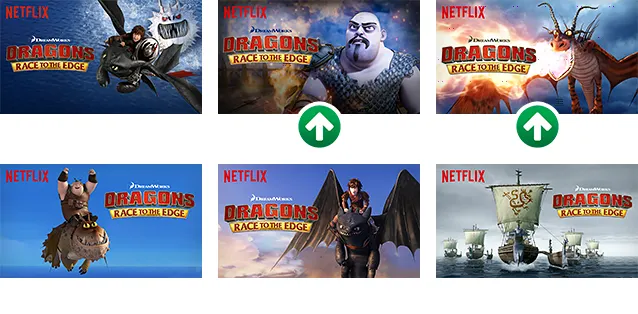
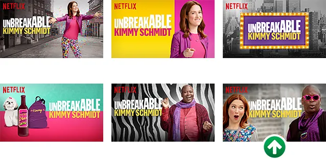

1 Company Background
1997
Founded (DVD-by-mail)
300M+
Subscribers worldwide
90 sec
Window to capture user attention
~80%
Content watched via recommendation
Founded in 1997 as a DVD-by-mail rental service, Netflix has grown into one of the world's largest entertainment companies with over 300 million subscribers across more than 190 countries. The company made a pivotal shift to online streaming in 2007 and has since expanded into original content production, releasing thousands of films and series under its own banner.
What sets Netflix apart from traditional media companies is its deep commitment to using data to drive decisions. Rather than relying on intuition or industry convention, Netflix has built a culture where nearly every major business decision is informed by what the data says — from what content to recommend to individual users, to what original shows to invest in, to how content is visually presented on screen.
Central to this approach is personalization. No two Netflix users have quite the same experience. The platform continuously learns from user behavior — what people watch, skip, or abandon — and uses those insights to tailor each user's experience. It is estimated that the majority of content people watch on Netflix comes not from searching, but from the platform's recommendations.
Strategic context
Supporting Netflix's personalization strategy is a strong culture of experimentation. Netflix rarely assumes something works — it tests it. By constantly running experiments and measuring real user behavior, the company makes confident, evidence-based decisions rather than educated guesses. This is the context for the artwork case that follows.
2 Experimentation in AI Systems
In many AI applications, organizations face a fundamental challenge: they do not know in advance which decision, design, or intervention will produce the best outcome. While AI models can generate predictions — such as what a user might click or prefer — those predictions do not automatically translate into effective decisions.
Key concept
A/B testing
A/B testing is a form of controlled experimentation in which users are randomly assigned to two or more groups, each of which sees a different version of a product, feature, or design. By measuring outcomes across groups, organizations can isolate the causal effect of a specific change. A/B testing transforms decision-making from intuition-driven to evidence-based. It is used at massive scale across digital products — Netflix, Google, Amazon, and Spotify all run thousands of simultaneous A/B tests. The key word is causal: random assignment ensures that any difference in outcomes is due to the thing being tested, not to differences between the users.
Experimentation can be understood as a core component of the AI development process. It connects data and models to actual business outcomes. Predictions suggest what might happen, but experimentation reveals what does happen when those predictions are acted upon. In this sense, experimentation is not separate from AI — it is a key mechanism through which organizations learn how to create value from AI capabilities.
3 The Netflix Artwork Problem
When a user opens Netflix, they are immediately presented with a grid of content options — movies, shows, and recommendations tailored to their preferences. But this moment is fleeting. Internal analysis at Netflix suggests that if a user does not find something engaging within roughly 90 seconds, they are likely to abandon the session entirely.

The Netflix homepage — users scan rows of artwork in under 90 seconds before deciding whether to stay or leave. Every thumbnail is a decision the system made.
This creates a fundamental challenge: how can Netflix help users quickly identify content they want to watch? From an AI and business perspective, this is a decision problem under uncertainty: Netflix must decide what to show users without knowing in advance what they will choose.
Key concept
Narrow AI
Netflix's artwork system is a useful example of narrow AI — also called weak AI or task-specific AI. It is purpose-built to solve one problem: which image will make a user most likely to click on a title. It does not reason broadly or generalize across domains. It does one thing, and it does it at massive scale across hundreds of millions of users. Most commercial AI systems are narrow in this sense. The term "general AI" refers to a system that can reason across any domain — this does not yet exist at human level. Understanding this distinction helps you evaluate AI claims realistically: when a company says they "use AI," they almost always mean narrow AI applied to specific decisions.
4 The Role of Artwork in User Decision-Making
When users browse Netflix, they rarely begin by reading descriptions or ratings. Instead, they rely on visual cues. Users tend to look at the artwork first and then decide whether to explore further. This insight reframes the role of artwork entirely:
- It is not simply decorative or promotional
- It directly influences whether a user clicks on a title
- It serves as a visual signal that helps users rapidly evaluate whether content is relevant to them
In AI terms, the artwork is part of the user interface layer of a decision system — it shapes how information is presented and interpreted, which in turn shapes user behavior and therefore the data the system learns from.
5 From Intuition to Data-Driven Decision-Making
Historically, Netflix relied on images provided by studios — posters or DVD cover art. These images were not optimized for Netflix's interface, where users quickly scan many options across many devices. As Netflix shifted toward data-driven decision-making, it also shifted toward automation: rather than asking a human designer to choose the best image for each title, Netflix built a system that tests options at scale and deploys the best performer without human intervention.

Traditional studio marketing — a Breaking Bad billboard designed for passive viewing. This kind of artwork was never optimized for a streaming interface where users are actively scanning dozens of thumbnails at once.
Key concept
Automation vs. augmentation in AI
AI systems can either automate decisions (the machine makes the final call without human review) or augment human decisions (the machine provides information or recommendations that a human uses to decide). Netflix's artwork system is largely automated — it runs experiments, measures outcomes, and deploys winning images without a designer approving each decision. EveryCure's system, by contrast, is augmenting: the model suggests drug-disease matches, but researchers decide what to test. The right design depends on the stakes of errors, the speed required, and the availability of human expertise. Neither approach is universally better.
6 The Prediction-Decision Gap
A machine learning model can tell you that a user is likely to click on a certain type of image — but that prediction alone does not tell you which specific image to show. There is always a gap between what a model predicts and what an organization should actually do.
Key concept
The prediction-decision gap
Machine learning models generate predictions — estimates of probability or expected outcomes. But predictions are not decisions. A model might predict that 35% of users will click on Image A and 40% will click on Image B — but should you show everyone Image B? What if Image B performs better on average but Image A resonates more strongly with certain user segments? What if the difference is within the margin of statistical noise? The gap between "the model predicts X" and "we should do Y" is the prediction-decision gap, and closing it is one of the most important — and most underappreciated — challenges in applied AI. Experimentation is Netflix's primary tool for closing that gap.
Experimentation is how Netflix closes the prediction-decision gap. Rather than acting directly on model predictions, Netflix tests those predictions in the real world and uses the results to make confident, evidence-based decisions at scale.
7 Experimentation as a Decision System
To determine which artwork leads to better user outcomes, Netflix implemented A/B testing. In a typical experiment:
- Users are randomly assigned to different groups (e.g., Artwork A vs. Artwork B)
- Each group sees a different version of the same title
- Netflix measures outcomes such as click-through rate, viewing duration, and completion rates
Key concept
Randomization and causal inference
The power of A/B testing comes from random assignment. If users are not randomly assigned to groups, any difference in outcomes might reflect differences between the users themselves rather than the effect of the artwork. For example, if Image B were shown to users who already tend to watch more, it would appear to perform better — but that would be a measurement artifact, not a real effect. Random assignment ensures that the two groups are statistically equivalent in all other ways, so any measured difference in outcomes can be causally attributed to the artwork itself. This is causal inference — determining not just correlation but actual cause and effect.
Key concept
Statistical significance
When you observe that Image B has a higher click-through rate than Image A in an experiment, there are two possible explanations: Image B is genuinely better, or the difference is just random noise — it would disappear if you ran the experiment again. Statistical significance is a measure of how likely the observed difference is to be real rather than due to chance. A result is typically called statistically significant when there is less than a 5% probability that the difference occurred randomly. Without statistical significance testing, organizations risk making large-scale changes based on meaningless noise in their data.
8 The Short Game: A Proof of Concept
To test whether artwork meaningfully affects user behavior, Netflix conducted a focused experiment on a single title: The Short Game, a documentary about young children competing in golf tournaments.
The original artwork did not clearly communicate that the film was about children. Netflix developed several alternative versions that more clearly highlighted the central theme, then conducted a controlled experiment — different users were randomly shown different versions, and Netflix measured click-through rate, viewing duration, and completion behavior.
The results showed that certain versions of the artwork significantly increased engagement. Images that made the subject of the film more immediately recognizable broadened the audience for the title. This experiment served as an early proof of concept — demonstrating that artwork is not just aesthetic, it is a lever for influencing behavior — and justified scaling the approach across the entire platform.

The Short Game A/B test: the default artwork (Cell 1) was the control. Cell 2, which more clearly showed children playing competitive golf, drove a 14% better take rate. Cell 3 drove 6% better. A small image change produced a measurable business outcome.
Key concept
Feature representation in ML
In the context of Netflix's artwork system, the artwork acts as a representation of the content. Changing it changes how users perceive and evaluate the title. In ML terms, the artwork is a feature — an input variable that influences a predicted outcome (click probability). When Netflix tests different images, it is essentially testing different feature representations of the same underlying content object. The insight that "which image you show" is a feature that can be optimized is what turned artwork selection from a creative decision into a machine learning problem.
9 Scaling Experimentation: Explore and Exploit
As Netflix expanded its artwork optimization approach, it introduced a structured experimentation strategy built around a fundamental tradeoff that appears in nearly every AI recommendation system:
Key concept
The explore/exploit tradeoff
The explore/exploit tradeoff describes the tension between two competing objectives in any learning system. Exploration means trying new options to gather information — showing users different artwork to learn which performs best. Exploitation means using what you already know works — showing the proven best-performing artwork to maximize immediate engagement. Pure exploration wastes engagement on options you already know are worse. Pure exploitation prevents you from ever discovering something better. Netflix manages this tradeoff by running structured experiments (explore phase) and then deploying winning variants at scale (exploit phase). The same tradeoff appears in Spotify's recommendation system, Google's ad auctions, and virtually every other AI system that must balance learning with performance.

Dragons: Race to the Edge — six artwork variants were tested. The two marked with green arrows significantly outperformed the others and were deployed at scale. The winning images lead with dramatic character close-ups rather than wide action scenes.

Unbreakable Kimmy Schmidt — six variants tested. The image marked with a green arrow significantly outperformed all others. Netflix's system identified this winner automatically and deployed it to the full user base without human approval.
10 The AI Factory: From Data to Value
The Netflix artwork case can be understood through the same AI Factory framework that structures every chapter in this course:
Data
→
Model
→
Prediction
→
Decision
→
Value
- Data: Netflix collects impressions (when an image appears on screen), clicks, and viewing behavior — duration, completion, abandonment — for each artwork variant shown to each user.
- Model: Statistical comparisons of performance across variants, metrics such as click-through rate, and experimental design logic. More advanced versions use ML models to predict which images will perform well before running full experiments.
- Prediction: The system estimates which artwork is likely to generate higher engagement — which version will lead to more clicks, longer viewing, or more completed content.
- Decision: Based on these predictions and experimental results, Netflix decides which artwork to show to future users, when to replace existing images, and when enough evidence has been collected to act.
- Value: Increased user engagement, faster content discovery, and higher total viewing time. Netflix found that optimizing artwork did not simply shift viewing from one title to another — it increased overall engagement across the platform.
Key insight
Competitive advantage often comes not from a single model, but from a system that continuously learns and improves decisions. Data is constantly collected, experiments continuously generate new insights, and decisions are updated based on evidence. This is the AI Factory in action — and it is why Netflix's artwork system gets better over time while a single static algorithm would not.
11 Summary Table & Discussion Questions
AI Factory model: Netflix mapped
| Step | Netflix example | Business purpose | Key ML concept |
|---|
| Data | Impressions, clicks, viewing duration, completion rates per artwork variant | Build a behavioral dataset that captures user response to different visual signals | Implicit signals; behavioral data |
| Model | Statistical comparison of CTR across variants; ML models predicting image performance | Identify which artwork features predict engagement | A/B testing; feature representation |
| Prediction | Expected CTR and viewing behavior for each artwork option | Estimate which image will perform best before full deployment | Causal inference; statistical significance |
| Decision | Deploy winning artwork at scale; replace underperforming images | Close the prediction-decision gap with evidence-based action | Prediction-decision gap; automation |
| Value | Higher engagement, better content discovery, increased overall viewing time | Improve subscriber retention and platform stickiness | Explore/exploit tradeoff; feedback loop |
ML vocabulary introduced in this chapter
A/B testing
Controlled experiment comparing two variants with random assignment
Narrow AI
AI purpose-built for one specific task
Prediction-decision gap
The gap between what a model predicts and what to actually do
Randomization
Random group assignment enabling causal inference
Statistical significance
Confidence that observed differences are real, not noise
Click-through rate (CTR)
Proportion of users who click after seeing a stimulus
Explore/exploit tradeoff
Balancing learning new options vs. using what works
Automation vs. augmentation
Machine decides vs. machine assists human decision
Feature representation
How an input variable encodes information for a model
Causal inference
Determining cause-and-effect, not just correlation
Discussion questions
- Narrow vs. general AI: Netflix's artwork system is narrow AI — it does one thing very well. What are the limits of this? What decisions adjacent to artwork selection would require a different type of system?
- The prediction-decision gap: A model predicts that Image B will get more clicks than Image A. Walk through all the reasons you might still not switch to Image B. What additional information would you want?
- Automation vs. augmentation: Netflix automated artwork selection — humans no longer approve each image. Is this appropriate? What could go wrong, and how would you design a safeguard?
- Experimentation ethics: Netflix experiments on users continuously without their explicit awareness. Given what we know about AI ethics and decision-making, is this acceptable? Where do you draw the line between acceptable testing and manipulation?
- Walk the AI Factory: Using Netflix's artwork system, identify which step in the AI Factory you think creates the most value. Defend your answer with specific evidence from the case.
- Explore vs. exploit: Netflix must balance showing proven artwork (exploit) vs. testing new options (explore). How would you design the policy for when to explore vs. exploit? What variables would inform that decision?
- Connection to EveryCure: Both EveryCure and Netflix use the AI Factory pattern. What is fundamentally different about the human-in-the-loop design in each case? Why do you think Netflix automates but EveryCure does not?